Configuración del Servidor de Correo con Postfix y Dovecot
Instalación y Configuración de Postfix
Instalación de Postfix:
sudo apt update && sudo apt install postfix -y
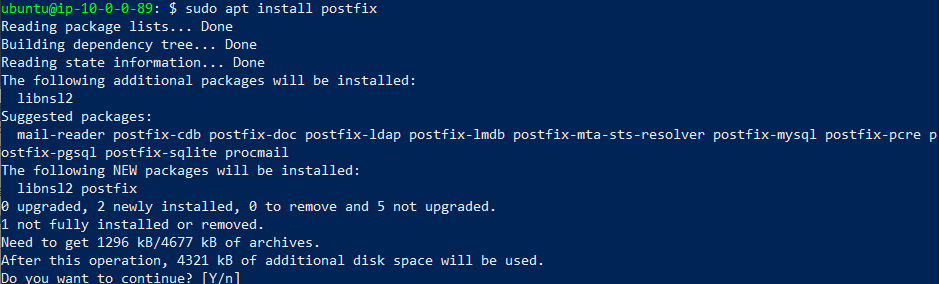
Configuración del dominio:
- Durante la instalación, seleccionamos "Sitio de Internet" y establecemos nuestro dominio.
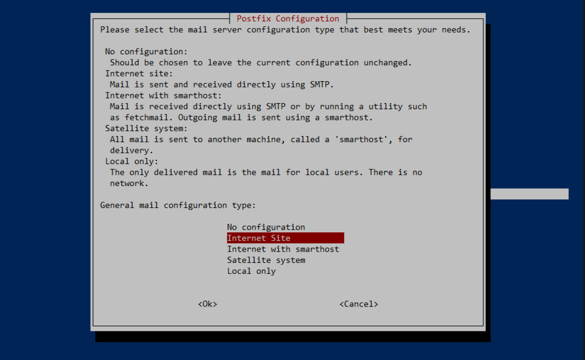
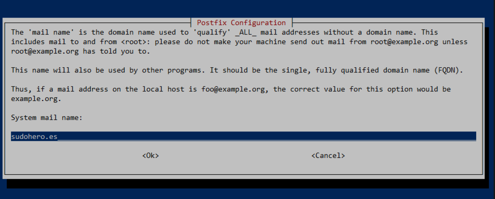
- Editamos el archivo de configuración:
bash
sudo nano /etc/postfix/main.cf
- Nos aseguramos de definir:
myhostname = mail.sudohero.es
mydomain = sudohero.es
myorigin = $mydomain
inet_interfaces = all
home_mailbox = Maildir/
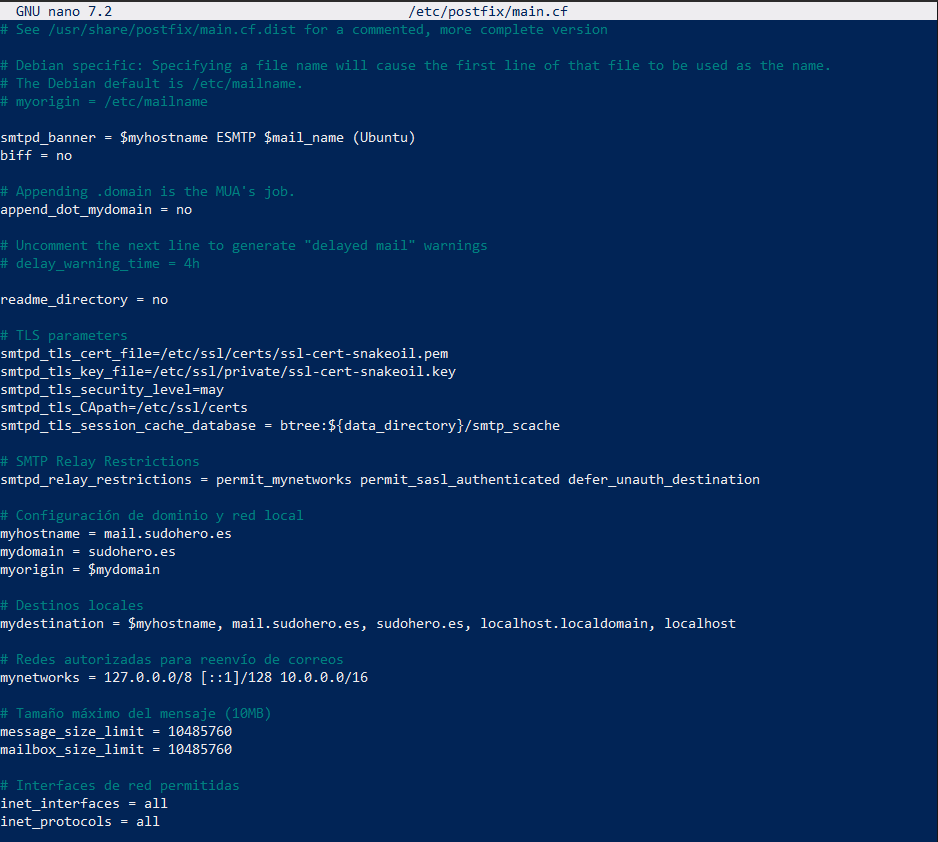
Creación de usuarios para correo:
sudo adduser lucas
sudo adduser alvaro
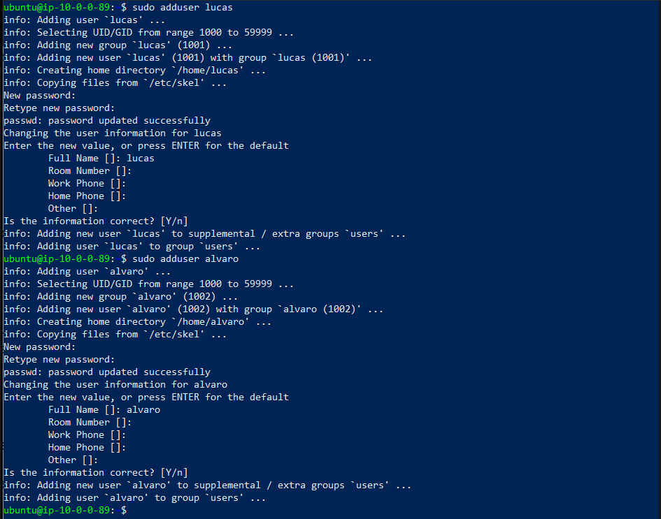
Instalación de Mailutils y creación de buzones:
Instalamos la utilidad mailutils para probar nuestro servicio de Postfix, creamos los directorios mail de los usuarios que vamos a utilizar.
sudo apt install mailutils -y
mkdir -p /var/mail/lucas /var/mail/alvaro
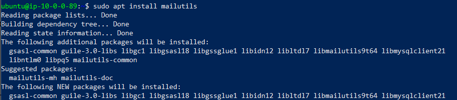
Tras reiniciar Postfix, utilizamos mailutils para enviar un correo desde la cuenta principal del equipo (Ubuntu) al usuario lucas. Revisamos su bandeja de entrada y comprobamos que ha recibido el correo.
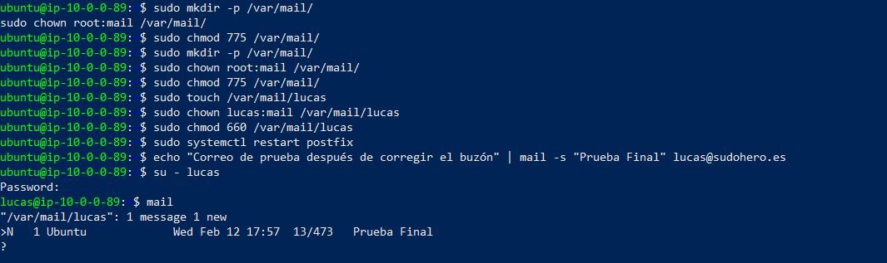
Envío de correo desde Álvaro a Lucas:
su - alvaro
echo "Correo de prueba para lucas" | mail -s "Test para lucas" lucas@sudohero.es
- Luego, verificamos la bandeja de Lucas.
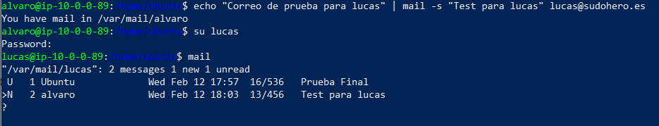
Instalación y Configuración de Dovecot
Instalación de Dovecot:
sudo apt install dovecot-core dovecot-imapd -y
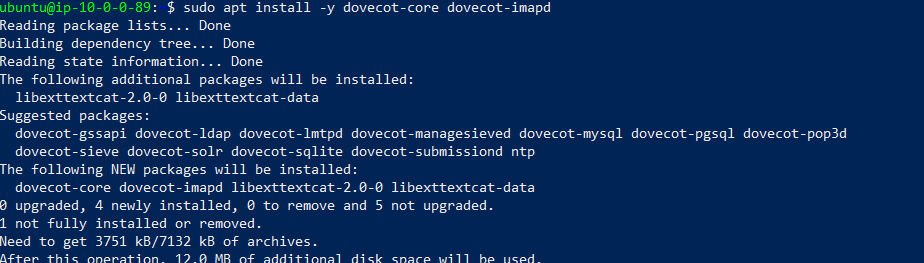
Configuración del Maildir:
- Editamos el archivo
10-mail.conf:
bash
sudo nano /etc/dovecot/conf.d/10-mail.conf
-
Modificamos:
mail_location = maildir:~/Maildir
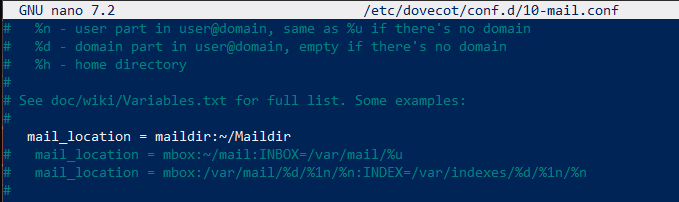
Configuración de autenticación:
- Editamos
10-auth.conf:
bash
sudo nano /etc/dovecot/conf.d/10-auth.conf
-
Cambiamos:
disable_plaintext_auth = yes auth_mechanisms = plain login
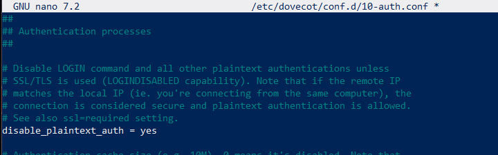
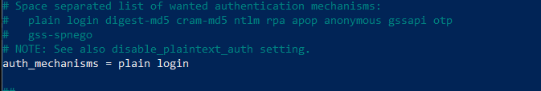
Habilitación de IMAPS:
- Editamos
dovecot.conf:
bash
sudo nano /etc/dovecot/dovecot.conf
-
Modificamos:
protocols = imaps
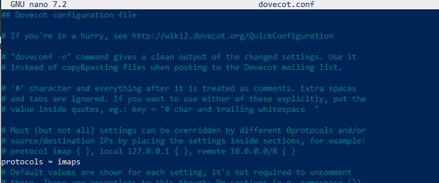
Configuración del servicio IMAP:
- Editamos
10-master.conf:
bash
sudo nano /etc/dovecot/conf.d/10-master.conf
-
Añadimos:
service imap-login { inet_listener imaps { port = 993 ssl = yes } }
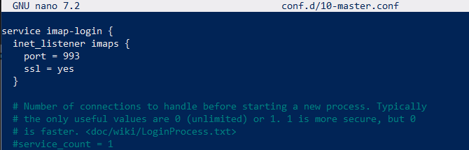
Configuración SSL:
- Editamos
10-ssl.conf:
bash
sudo nano /etc/dovecot/conf.d/10-ssl.conf
-
Especificamos los certificados:
ssl = required ssl_cert = </etc/ssl/certs/ssl-cert-snakeoil.pem ssl_key = </etc/ssl/private/ssl-cert-snakeoil.key
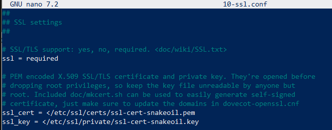
Creación de directorios Maildir para los usuarios:
sudo mkdir -p /home/usuario/Maildir
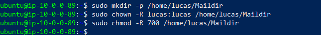
Prueba de Acceso al Correo
Comprobar conexión IMAP:
openssl s_client -connect localhost:993 -quiet
Iniciar sesión con usuario y contraseña:
a login lucas contraseña
- Si la autenticación es exitosa, el servidor responderá con
a OK Logged in.
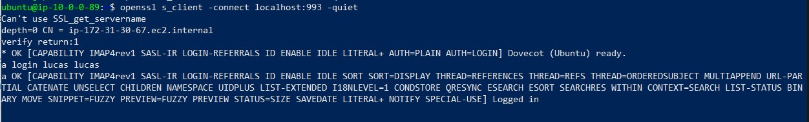
Con esta configuración, hemos implementado un servidor de correo funcional basado en Postfix y Dovecot, permitiendo el envío y recepción de correos con autenticación segura y soporte para IMAPS.
Instalación de Roundcube en Fedora
Instalación de Apache y preparación del entorno
Lo primero que debemos hacer es instalar y habilitar Apache para que inicie con el sistema:
sudo systemctl start httpd.service
sudo systemctl enable httpd.service
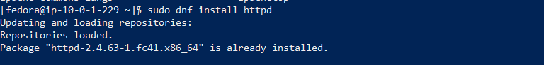
Descarga e instalación de Roundcube
Descargamos la última versión de Roundcube, la descomprimimos y la movemos al directorio web:
sudo mv roundcubemail-1.6.10 /var/www/html/roundcube
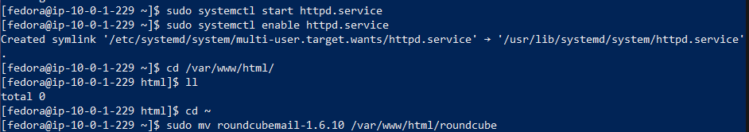
Configuración de VirtualHost
Creamos un archivo de configuración en Apache para Roundcube:
sudo nano /etc/httpd/conf.d/roundcube.conf
Añadimos el siguiente contenido:
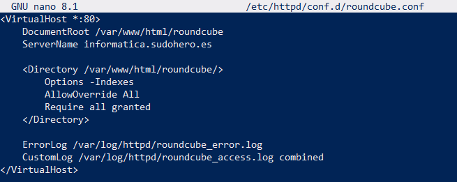
Guardamos los cambios y verificamos la configuración:
sudo httpd -t
Si la sintaxis es correcta, reiniciamos Apache:
sudo systemctl restart httpd.service
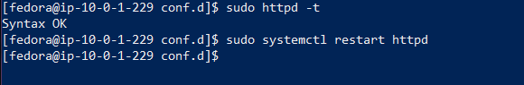
Instalación y configuración de Roundcube
Desde la máquina cliente Windows, accedemos a la instalación de Roundcube a través del navegador:
http://informatica.sudohero.es/installer/
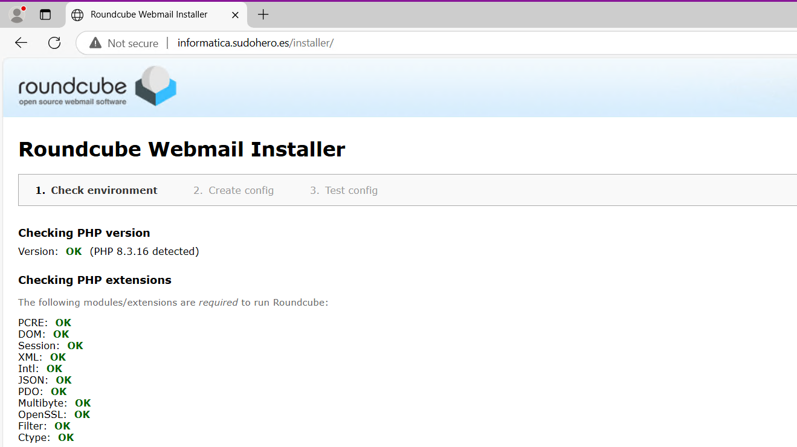
Verificamos que todos los módulos PHP requeridos estén instalados y completamos la configuración de Roundcube.
Pruebas de SMTP e IMAP
Para asegurarnos de que el servidor de correo funciona correctamente, realizamos pruebas con las siguientes configuraciones:
- Prueba de SMTP:
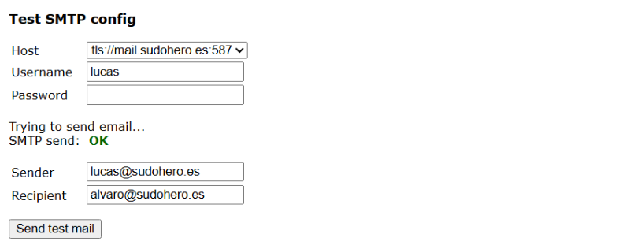
- Prueba de IMAP:
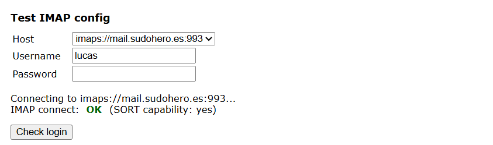
Acceso a Roundcube Webmail
Una vez finalizada la instalación, accedemos a Roundcube Webmail e iniciamos sesión con nuestras credenciales:
http://informatica.sudohero.es/
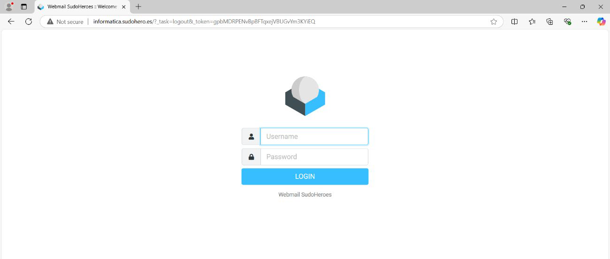
Verificamos la bandeja de entrada y confirmamos la recepción de correos, como el enviado por alvaro@mail.sudohero.es a lucas@mail.sudohero.es.
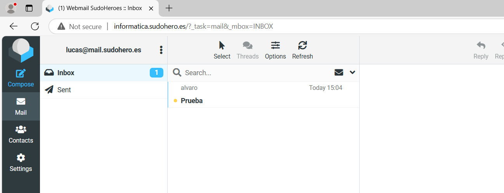